限制能夠存取網路印表機的IP
筆者就讀的研究所有一台網路印表機，供研究生透過網路新增印表機並列印。
不過近幾個月來印表機開始會莫名地印出一些亂碼，（我們戲稱這是外星人傳給我們的訊息，）而且每張紙都只印個一兩行，常常在紙匣放入一疊紙後，隔天就印出一大堆印了亂碼的紙張，非常浪費資源。
懷疑是印表機遭到駭客攻擊，但也找不到是哪個IP送出列印請求。
原本解決的辦法是不使用印表機時將紙匣拉出，要印時再把紙匣推進去，但是有時候發現印表機在亂印時，為了即時阻止，會將紙匣拉出，但卻容易造成卡紙。
另一個嘗試是不用印表機時將其關機，但是這麼一來就需要頗長的時間等待開機，根本沒辦法發揮網路印表機的方便。
官方網站的說明書相當簡略，這是詳細版的官方說明書，但也幫不上忙，利用線上客服也等了很久才說我們的網路印表機過了保固期限。
所以筆者上網找了一些設定網路印表機防火牆的教學，讓網路印表機能夠限制只有某些IP能夠存取印表機。教學原文。
下面是設定網路印表機防火牆的方法，能夠限制只有某些IP能夠存取印表機。筆者的網路印表機是HP LaserJet 600 M602，操作環境Windows 7，瀏覽器是Chrome。
大略描述一下方法：首先設定可以存取印表機的IP範圍(Step 6~Step 14)，再禁止所有IP存取印表機(Step 15~Step 19)，因為允許的IP範圍是"先"設定的，所以"後"設定的禁止所有IP存取並不會蓋過之前的設定，也就是說，這樣設定的結果會變成只有設定的IP範圍能夠存取印表機，此範圍外的IP都將被禁止存取印表機。
如果讀者有其他需求，例如只想要允許存取印表機的部分功能，或是想要新增多組存取印表機的IP範圍，相信聰明的你可以做相應的變化與設定。
- 先在瀏覽器網址列輸入網路印表機的IP，可能會出現下圖的警告，選擇繼續前往。
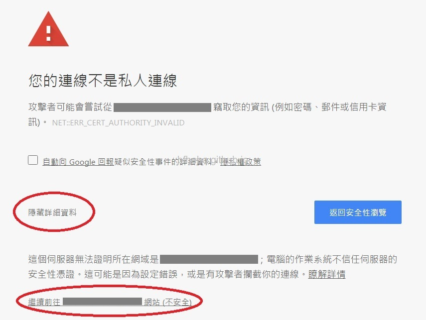
-
進到管理印表機的網頁。
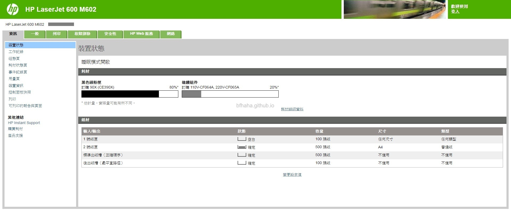
- 在上方的標籤選擇[網路]。
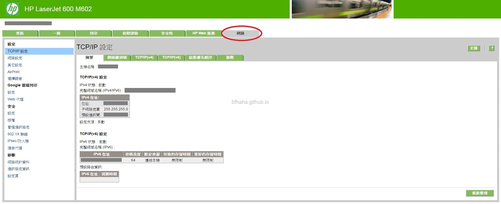
- 先在左側點選[選擇語言]，並選擇英文[English]，按下[套用]按鈕。
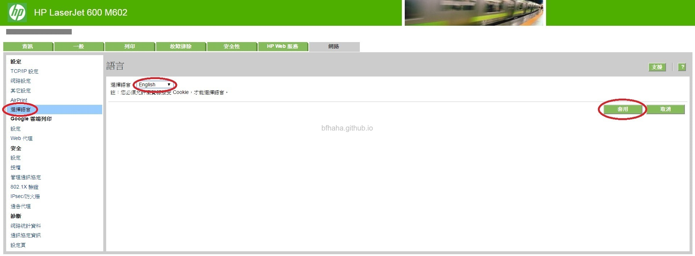
- 設定成為英文的介面。這麼做的目的是如果讀者在操作上遇到問題，可以將遇到的問題的英文上google搜尋，比較找得到協助的資源。
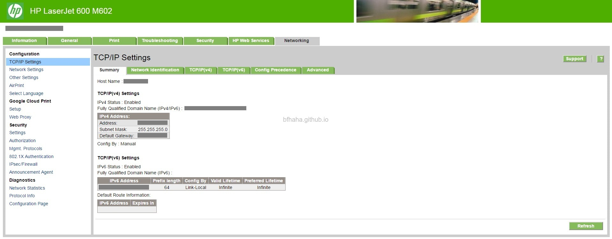
- 在左側選擇[IPsec/Firewall]，並按下[Add Rules]按鈕，表示我們要開始設定一組規則。
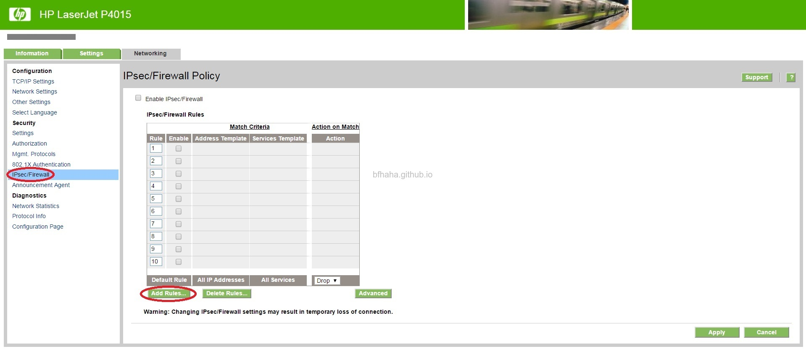
- 接著進到如下圖的畫面，因為我們要設定允許存取的IP，所以我們按下[new]按鈕，來新增允許存取的IP。
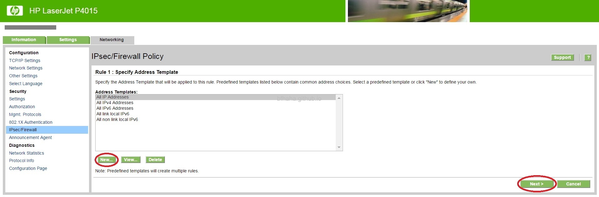
- 首先在[Address Template Name]輸入這組允許存取的IP的範圍名稱，例如Authorized User，然後在右下方（如紅圈圈圈起處）設定允許存取的IP範圍，輸入完之後按下[OK]
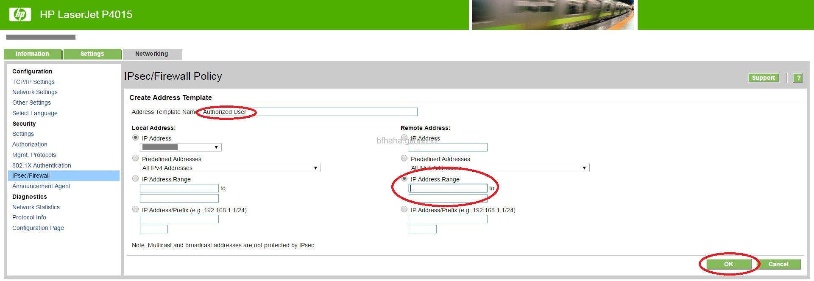
- 頁面會回到上一頁，並且顯示剛剛設定的IP範圍的名稱，選取這個名稱，按下[Next]。
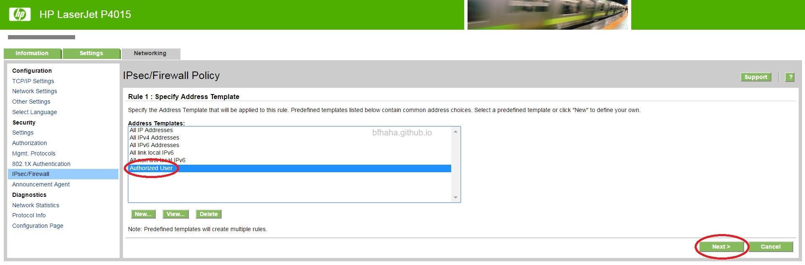
- 我們要設定這個IP範圍能夠"完全地"存取印表機，所以選擇[All Services]，並按下[Next]。
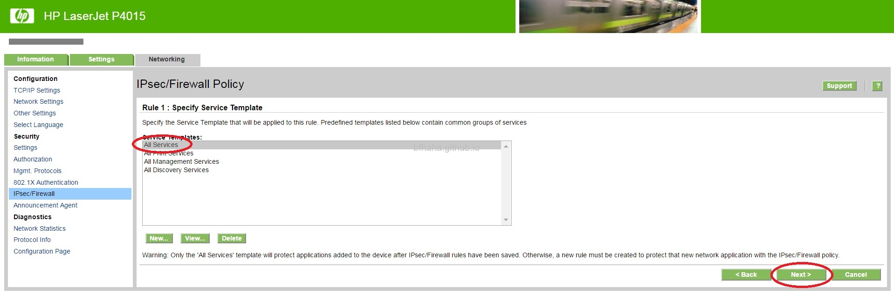
- 圈選第一個[Allow traffic to pass without IPsec/Firewall protection]，這表示我們"允許"這個IP範圍可以存取印表機。按下[Next]。
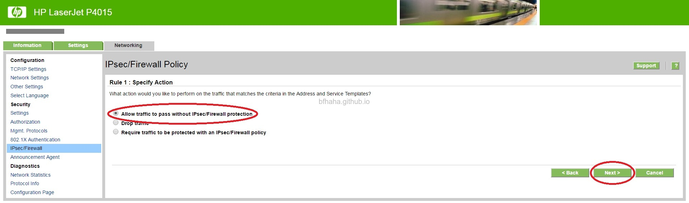
- 可以看到所設定的IP範圍的名稱[Authorized User]，還有這個IP範圍能夠[Allow traffic]存取所有的功能[All Services]，按下[Finish]按鈕。
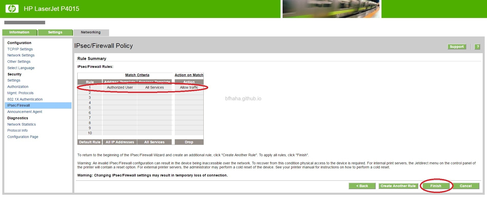
- 最後，會詢問是否馬上啟用這個設定，預設是[No]，第二個問題是為了避免管理員不小心把自己的IP也設定為禁止存取，這麼一來連管理員都沒辦法進到網頁管理印表機的這個頁面來更改設定，所以要選擇[Yes]，表示既使禁止存取印表機，依然可以暫時地進到網頁管理。我們都保持預設就好，按下[OK]按鈕。
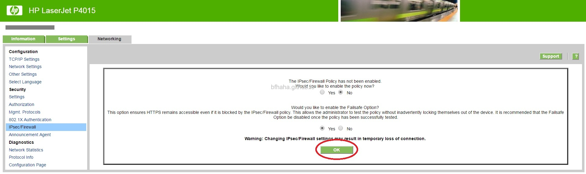
- 回到了Step 6的頁面，不過可以看到我們已經新增了一組Rule，也就是設定了哪些IP範圍可以存取印表機。下一步我們要設定哪些範圍禁止存取印表機。
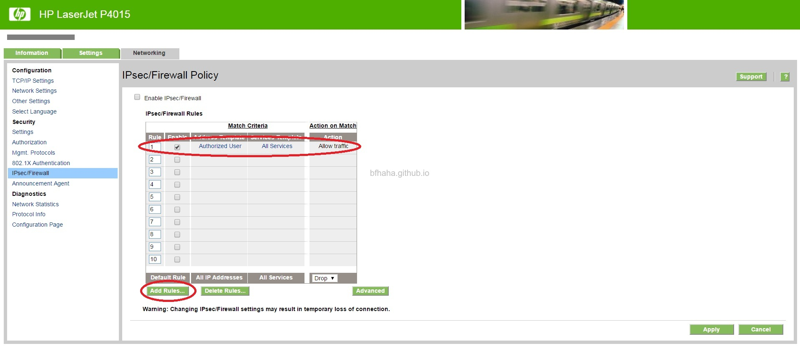
- 我們剛剛已經先設定了某些IP範圍可以存取印表機，我們現在設定所有的IP禁止存取印表機，因為我們"先"設定了某些可以存取印表機的IP範圍，所以"後"設定的禁止所有IP並不會凌駕之前的設定，也就是說，之前設定的某些IP範圍依然可以存取印表機，不過在此IP範圍之外的IP都將被禁止存取。按下[Add Rules]
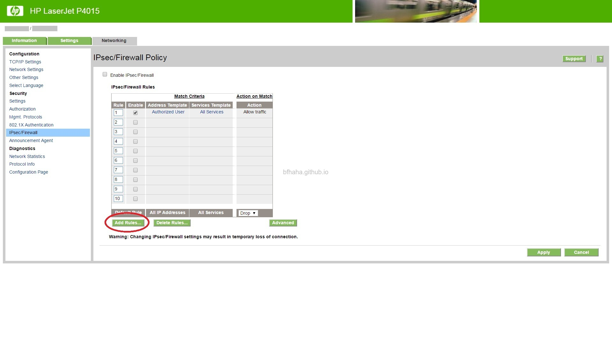
- 所以在這裡選擇[All IP Addresses]，並按下[Next]。
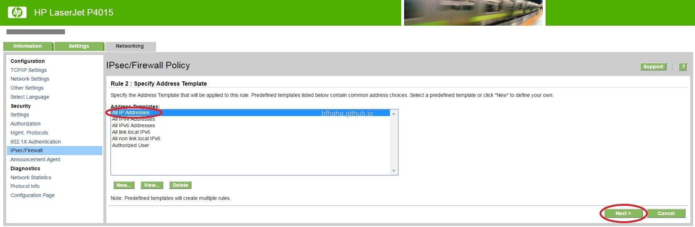
- 選擇[All Services]，並按下[Next]。
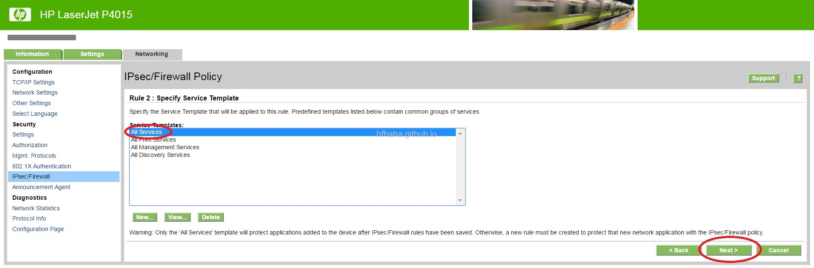
- 因為我們是要禁止這些IP存取印表機，所以圈選[Drop traffic]，並按下[Next]。
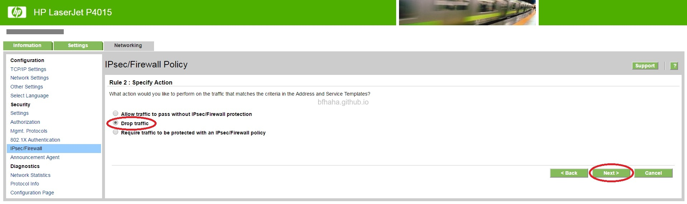
- 可以看到了我們設定了哪些IP範圍[Authorized User]可以存取印表機[Allow traffic]，所有IP範圍[All IP Addresses]禁止存取印表機[Drop traffic]，按下[Finish]。
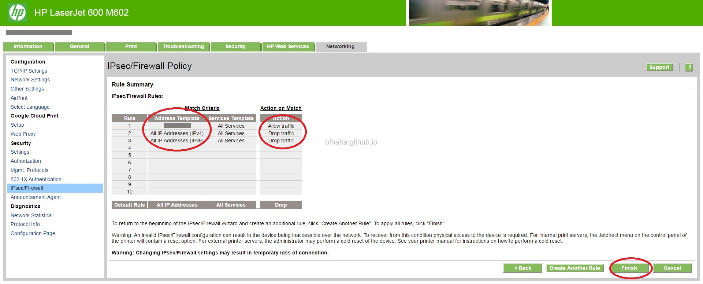
- 再次回到Step 6的畫面，記得勾選[Enable IPsec/Firewall]，並按下[Apply]。
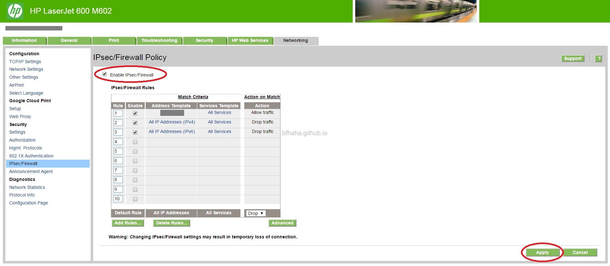
- 最後，按下[OK]，設定完成。
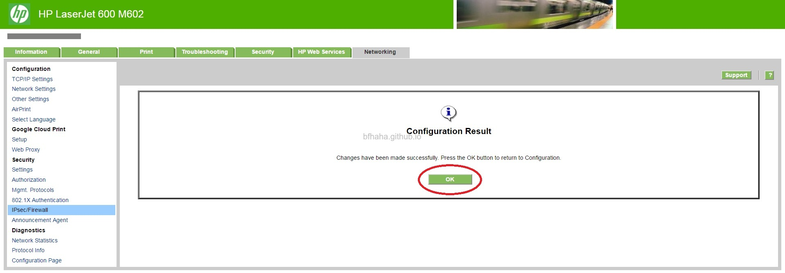